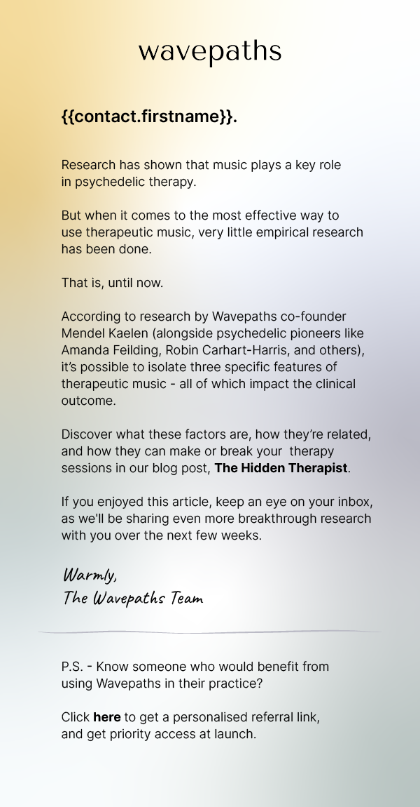

Columbia's New York State Psychiatric Institute Facebook ads to gather participants for addiciton treatment research.


Magic
I was excited to be part of a conscious-driven, digital marketing agency that amplified clients with missions for the world. As a graphic designer, I was given the opportunity to create ads on all channels and in all digital mediums. There was a lot of opporunity to be strategic and be able to lead ad creatives.
Just Thrive is a supplement and vitamin company that partners with charities like Vitamin Angels and Generosity Feeds on Facebook and Pinterest.
Jot is a modern coffee company that ran ads on Snapchat and Pinterest to promote sales.
Unreal Garden is an experimental AR immersive art experience based in San Francisco sponsored by Microsoft for use of the Enklu Hololens. They ran Facebook ads to generate ticket sales and call for artists.
Tatango allows political campaigns to reach their constituents quickly and effectively.
Shef lets independent cooks be their own boss. Shef ran Facebook and Google ads to run sales and recruit new cooks onto the platform.
Wavepaths is an AI generated supplemental music tool for therapists and psychedelic therapists. Wavepaths ran ads on Facebook and email to recruit therapists.

Fat Snax is a keto snack brand that promoted their products on Facebook, Pinterest, and email.